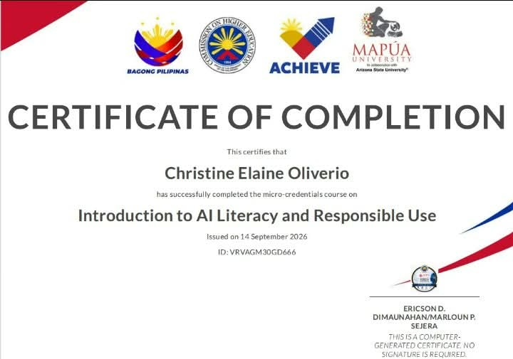
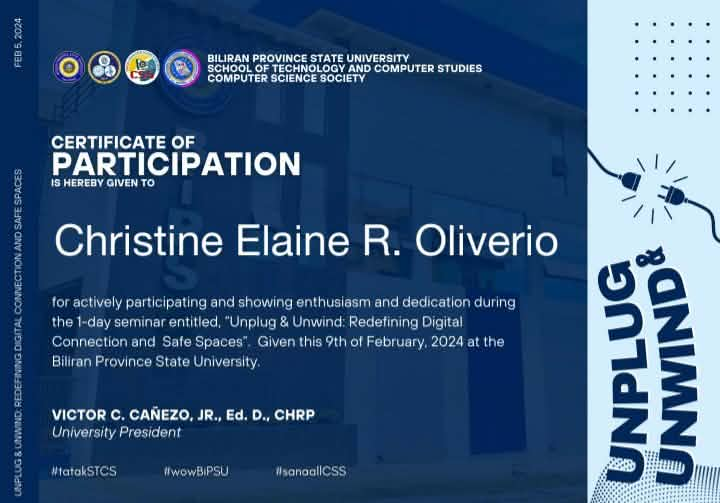
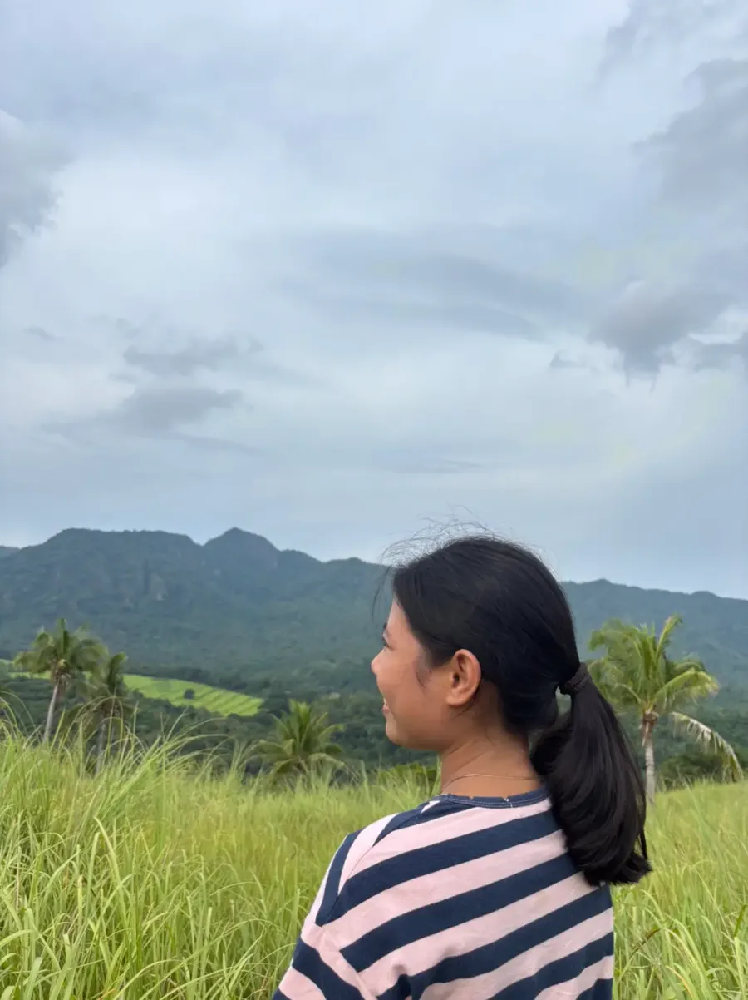
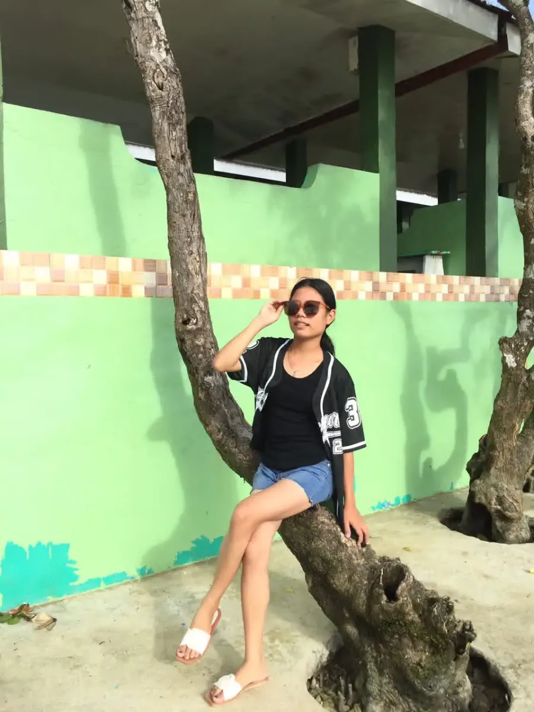
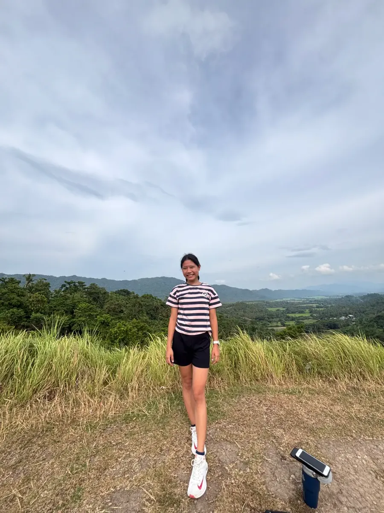
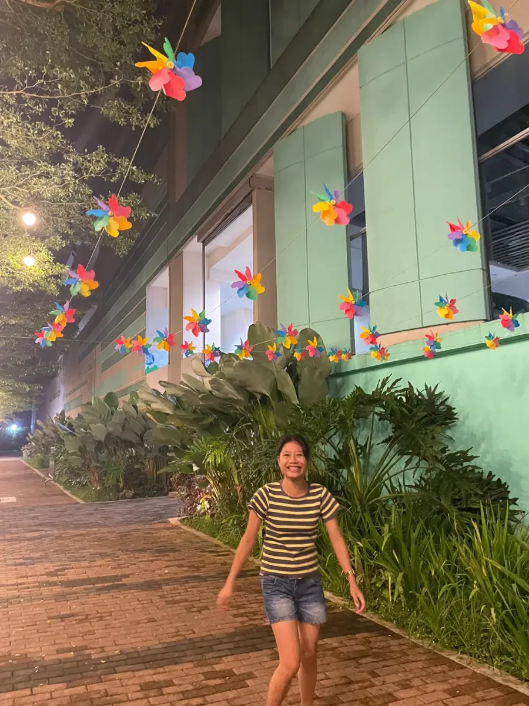
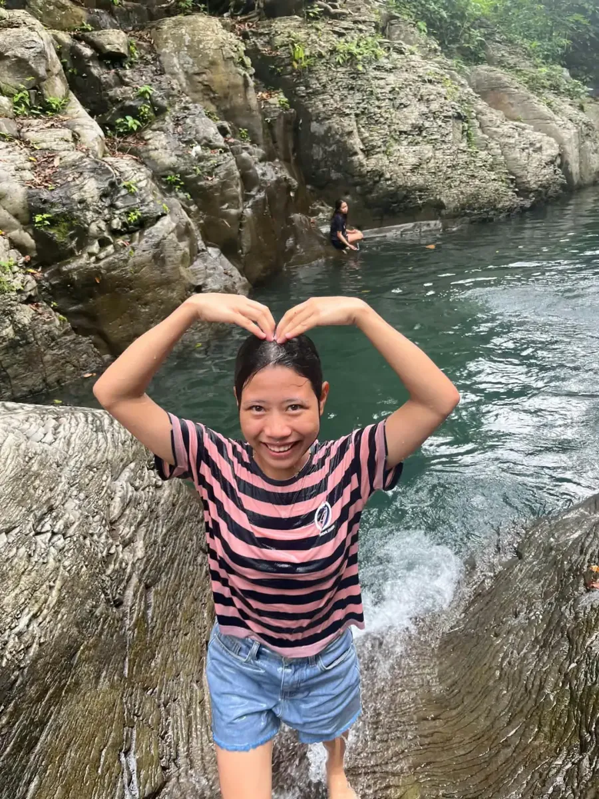
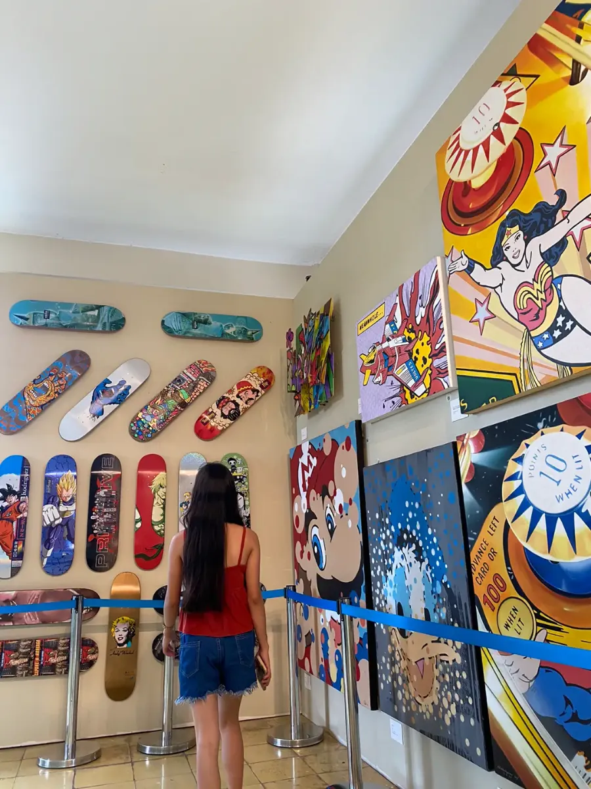
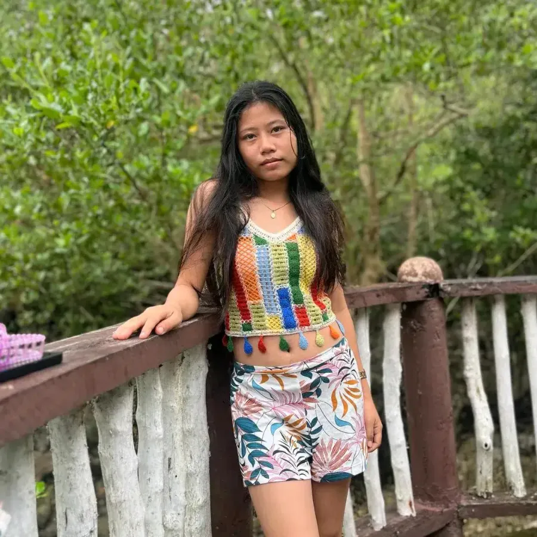

IntelliGuide
An offline assistive mobile app that helps visually impaired users detect obstacles in real time.
👋 Hello there!
Aspiring
Designing with empathy, building with purpose.
Get to know me
Hi! I'm Christine Elaine Oliverio, a fourth-year Bachelor of Computer Science student from Leyte. I love turning real-world problems into simple, helpful apps — from an offline assistive app for the visually impaired to a tourism site for Biliran.
I enjoy learning new technologies, sharpening my programming skills and designing interfaces that feel easy to use. I'm excited to grow as I prepare for my career in tech.
What I work with
The languages I use to design, build and test websites and web apps.
Services
I build useful, user-friendly websites that pair thoughtful design with solid functionality.
Responsive websites built with HTML and CSS, and web apps powered by Python.
Wireframes, prototypes and interfaces designed around real users.
Clear reports and presentations with Word, Excel and PowerPoint.
Featured work
Here are some of the projects I've worked on — from thesis research to web apps.
An offline assistive mobile app that helps visually impaired users detect obstacles in real time.
A tourism web app for Biliran to browse destinations, discover attractions and plan trips.
An interactive digital letter that opens with an envelope animation and plays music.
Camera: detects obstacles in real time and shows what each one is, how far away it is and which side it's on.
Mobile App · Thesis Project
IntelliGuide is an assistive mobile app that helps visually impaired users move around more safely. Using the phone's camera, it detects obstacles in real time with a YOLOv8 Nano model and a CNN+ViT classifier, then tells the user what is ahead, how far it is and which side it's on — through both voice and vibration.
Everything runs on the device, so it works fully offline, and the voice feedback is available in English, Tagalog and Bisaya.
Welcome Page: introduces Biliran Island and lets visitors log in or create an account.
Web App · Python
ExploreBIL is a tourist exploration web app for the province of Biliran. Visitors can browse destinations, discover local attractions and plan their trips — all in one place.
Envelope: the closed envelope waiting to be tapped open.
Web Page · Mini Project
A small interactive web page that turns a message into a digital letter. The visitor taps the envelope, it opens with an animation, and the letter slides out with a scrollable message and a music player.
Achievements
Seminars and courses that helped me grow. Click a certificate to view it larger.

CHED · Mapúa University — Sept 2026
Biliran Province State University — Oct 2025

Biliran Province State University — Feb 2024
Off the screen
A little of my life away from the keyboard: sunsets, hikes, rivers and good company. Click a photo to view it larger.







Say hello
Have a project, an internship opportunity or just want to say hi? My inbox is always open.
Send me an email